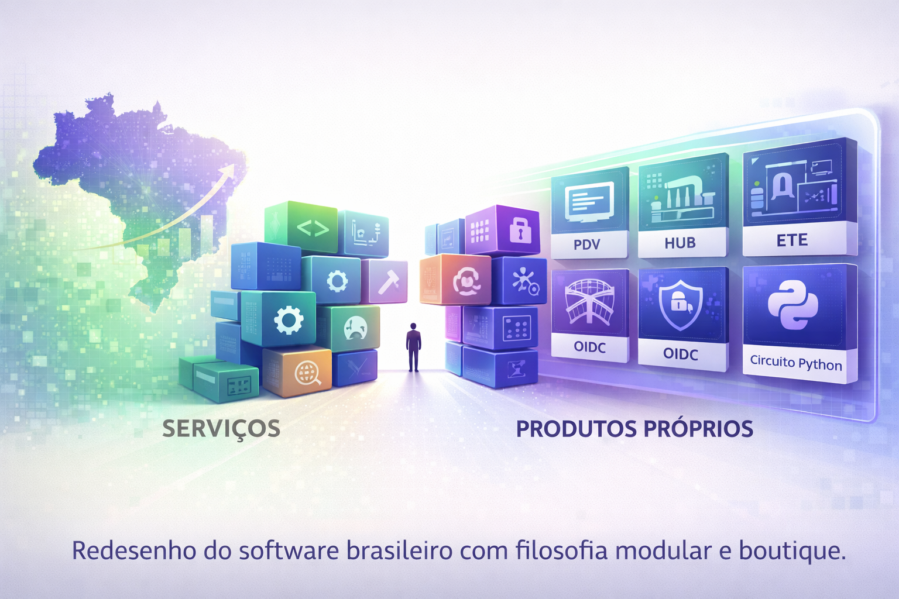

A Nova Cara Core: Como uma Startup Boutique Está Redesenhando o Software Brasileiro
Introdução: O Momento em Que Paramos de Só Prestar Serviço
Durante anos, o mercado brasileiro de software repetiu um script: grandes players vendem pacotes fechados; empresas locais fazem customização, integração e suporte. O valor está no projeto, na hora-fatura, no consultor que desenha o fluxo. O produto é secundário — ou importado.
Um dia, a pergunta que não quer calar aparece: e se o valor estivesse no produto que nós mesmos construímos?
A Cara Core nasceu na trilha clássica — consultoria, Microsoft 365, VBA, automação sob demanda. Aprendemos a escutar o cliente, a mapear processos, a entregar solução que encaixa na realidade do negócio. Mas também vimos de perto o limite desse modelo: cada projeto é um novo começo; o conhecimento se acumula, mas o ativo reaproveitável é pouco. O Brasil emergente não precisa só de quem implemente ferramentas de outros. Precisa de quem desenhe ferramentas para o seu tamanho.
Esta é a história dessa virada: como uma empresa de serviços passou a se enxergar como startup boutique, com portfólio modular e foco em nichos que o mercado global ignora.
1. O Brasil Emergente e a Necessidade de Soluções Modulares
O Brasil que opera varejo em cidade média, que extrai e refina minério, que ensina programação em escolas públicas ou que precisa de identidade digital sem depender de um único fornecedor gigante não cabe em pacote único. Mercado global desenha para escala massiva; aqui, o que funciona é solução que se adapta ao tamanho do problema.
Isso exige três coisas que a Cara Core levou a sério:
- Nichos técnicos claros: PDV preparado para reforma tributária e Pix Split; Hub para última milha e e-commerce; identidade (OIDC) e autenticação enterprise; simulador hidrometalúrgico (ETE/Minerador 4.0); curso de programação (Circuito Ferradura). Cada um resolve um problema concreto, não um "suíte de tudo".
- Realidade local: legislação, tributos, hábitos de uso, infraestrutura de rede e nível de maturidade digital. Software que ignora isso vira projeto eterno de customização.
- Modularidade: o cliente não é obrigado a comprar o pacote completo. Pode adotar um produto, integrar com o que já tem, e crescer conforme a necessidade.
O Brasil emergente não é um slogan. É o endereço do problema que escolhemos atacar.
2. A Transição da Cara Core: De Serviços a Produtos Próprios
A jornada não foi de um dia para o outro. Consultoria e suporte continuam — há clientes que precisam de implementação, treinamento e suporte técnico. A diferença é que passamos a ter um núcleo de produtos que nasceu desse trabalho de campo.
O que veio primeiro
VBA, Excel, Microsoft 365, integrações sob medida. Depois, desenvolvimento em Java, sistemas web, APIs. Dessa base surgiram demandas recorrentes: controle de ponto de venda, gestão de entregas, autenticação segura, educação em programação, simulação em hidrometalurgia. Em vez de refazer tudo a cada projeto, começamos a extrair o que era comum e a transformar em produto.
O portfólio que existe hoje
Hoje a Cara Core entrega — ou prepara entrega — produtos com nome, versão e canal próprio: Cara Core PDV, Cara Core Hub, Reino OIDC, Minerador 4.0 (ETE), Circuito Ferradura, além de ferramentas internas como o Seed (licenças) e o suporte Área 51 (identidade e OAuth 2.1/OIDC). Cada um tem seu espaço no site (matriz) e, quando aplicável, loja de releases. A transição não apagou o passado; reorientou o futuro em torno de ativos que podemos evoluir, documentar e vender de forma repetível.
3. Filosofia Modular e Boutique
Boutique não é "pequeno por acaso". É escolha: não queremos ser o supermercado que vende de tudo. Queremos ser quem domina poucos eixos e os entrega com critério.
Modularidade é o desenho que permite isso: componentes que se encaixam, interfaces claras, integração possível com o ecossistema do cliente. O PDV conversa com o Hub; a identidade (Reino OIDC, Área 51) pode servir vários produtos; o Circuito Ferradura é um produto à parte, focado em educação. O cliente monta o que precisa, sem comprar o que não usa.
Isso exige disciplina: escopo bem definido, documentação, releases organizados e suporte alinhado ao que realmente vendemos. O trade-off é claro: menos escopo difuso, mais profundidade e coerência no que fazemos.
4. O Que Significa Ser uma Startup Independente
Independência aqui não é isolamento. É autonomia para definir roadmap, priorizar nichos e dizer não ao que desvia do foco. Não respondemos a acionista que exige crescimento a qualquer custo; respondemos ao cliente que precisa de solução que funcione no dia a dia.
Ser boutique e independente permite:
- Investir em produtos que o mercado global não prioriza (ex.: reforma tributária brasileira, última milha em cidades médias, identidade digital para empresas médias).
- Manter relação próxima com quem usa — suporte, feedback e evolução contínua.
- Alinhar tecnologia ao propósito: software que resolve problema real, não que só preenche checklist de marketing.
O risco existe: recursos limitados, concorrência de players grandes. A aposta é que há espaço para quem entrega valor concentrado em poucos eixos e fala a língua do cliente.
5. Como Isso Se Traduz no Portfólio
O portfólio da Cara Core reflete essa lógica. No site (caracore.com.br), a matriz concentra apresentação, documentação e links para cada produto; as lojas de releases (quando existem) oferecem downloads, versões e informações objetivas. PDV, Hub, Circuito Ferradura, Reino OIDC, ETE, Seed e Área 51 não são peças soltas: são módulos de um mesmo ecossistema, cada um com seu público e sua entrega.
Quem navega pelo portfólio vê coerência: mesma linguagem, mesma preocupação com modularidade e mesma orientação para o Brasil real — varejo, logística, identidade, educação, mineração. O redesenho do software brasileiro, no nosso caso, começa por esse desenho consciente do que oferecemos e para quem.
6. O Que Vem Pela Frente
Os próximos passos seguem a mesma bússola: aprofundar os produtos que já existem, documentar casos de uso, melhorar a experiência de quem baixa e usa (matriz e lojas), e abrir espaço para novidades que se encaixem no ecossistema — como o RU Soberano, que entra no radar como mais um eixo da "garagem" Cara Core.
Quem acompanha a Cara Core pelo LinkedIn, pelo site ou pelas publicações verá menos discurso genérico e mais conteúdo atado a produto: PDV, Hub, OIDC, ETE, Circuito Ferradura, identidade, última milha, reforma tributária. É a continuação natural de se assumir como startup boutique.
Conclusão: Identidade Não é Só Logo
A Nova Cara Core é, acima de tudo, uma decisão de posicionamento. Deixamos de nos apresentar apenas como quem faz serviços de TI para nos apresentar como quem constrói e entrega produtos de software — modulares, focados em nichos e desenhados para o Brasil emergente.
Quem prefere o modelo boutique sabe: o valor está na profundidade, na relação com o cliente e na coerência entre o que se diz e o que se entrega. É nisso que estamos trabalhando.
Hashtags
Contato
- E-mail: suporte@caracore.com.br
- Site: www.caracore.com.br
- LinkedIn: Cara Core Informática
Conecte-se conosco no LinkedIn para mais conteúdos sobre software boutique, produtos modulares e inovação no Brasil.
Seguir no LinkedIn
Artigo publicado em 7 de abril de 2026
© 2026 Cara Core Informática. Todos os direitos reservados.